Arc De Triomphe
Honors Those Who Fought And Died
Introduction
he Arc de Triomphe de l'Étoile,[a] often called simply the Arc de Triomphe, is one of the most famous monuments in Paris, France, standing at the western end of the Champs-Élysées at the centre of Place Charles de Gaulle, formerly named Place de l'Étoile—the étoile or "star" of
.......
s
History
The Arc de Triomphe is located on the right bank of the Seine at the centre of a dodecagonal configuration of twelve radiating avenues. It was commissioned in 1806, after the victory at Austerlitz by Emperor Napoleon at the peak of his fortunes.Laying the foundations alone took
.......
s
Design
The astylar design is by Jean Chalgrin (1739–1811), in the Neoclassical version of ancient Roman architecture. Major academic sculptors of France are represented in the sculpture of the Arc de Triomphe: Jean-Pierre Cortot; François Rude; Antoine Étex; James Pradier and Philippe Joseph Henri Lemaire, the sculpture representing Peace is interpreted as commemorating the Peace of 1815.
Tomb of the Unknown Soldier
Beneath the Arc is the Tomb of the Unknown Soldier from World War I. Interred on Armistice Day 1920,[27] an eternal flame burns in memory of the dead who were never identified (now in both world wars).In 1961, U.S. President John F. Kennedy and First Lady Jacqueline Kennedy paid their respects at the Tomb of the Unknown Soldier, accompanied by President Charles de Gaulle.
Details
Le Triomphe de 1810, by Jean-Pierre Cortot celebrates the Treaty of Schönbrunn. This group features Napoleon, crowned by the goddess of Victory. La Résistance de 1814, by Antoine Étex commemorates the French Resistance to the Allied Armies during the War of the Sixth Coalition.
 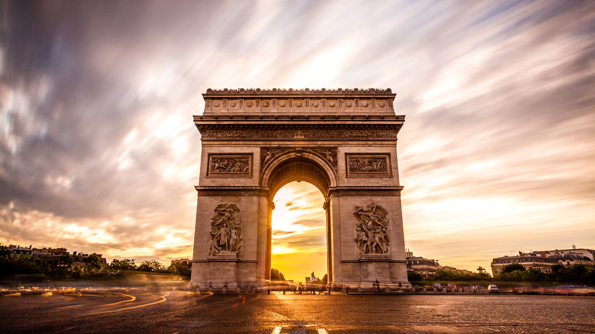
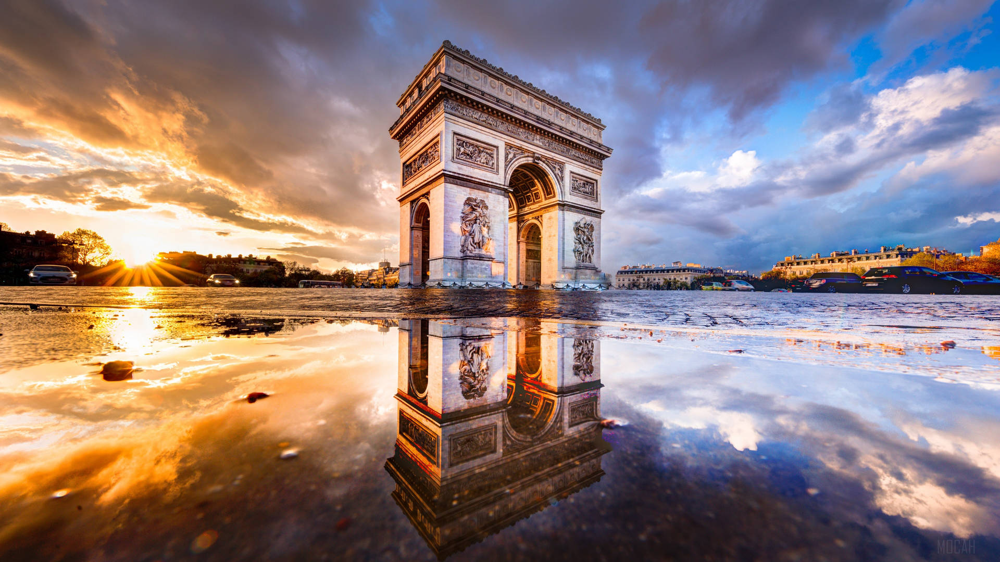
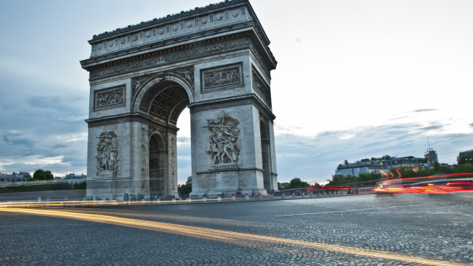
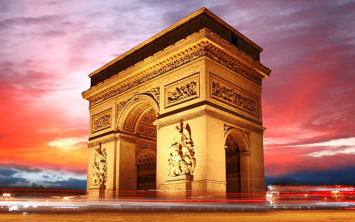
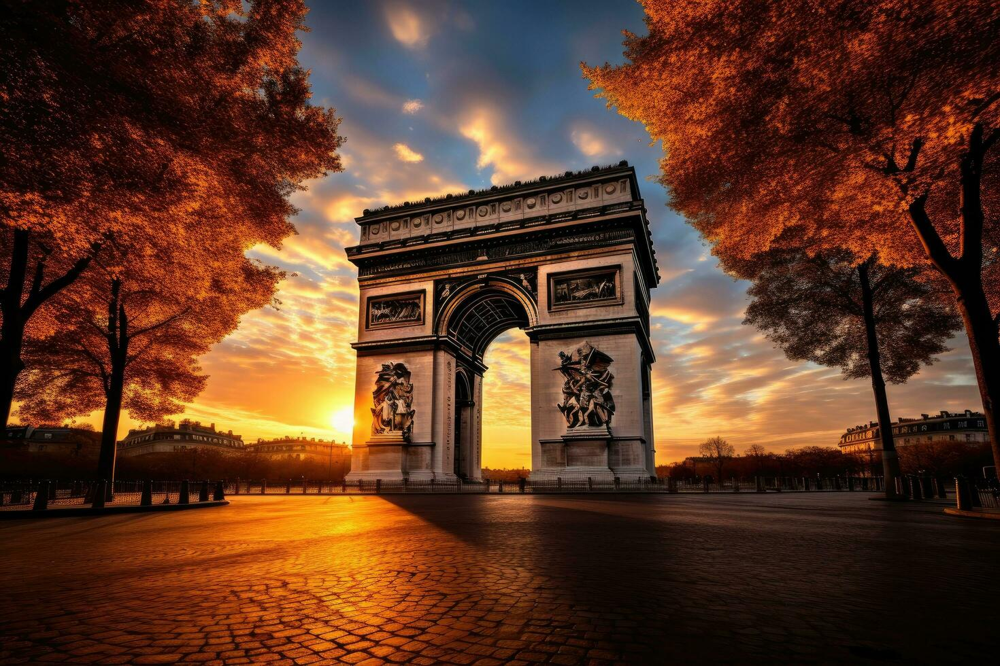
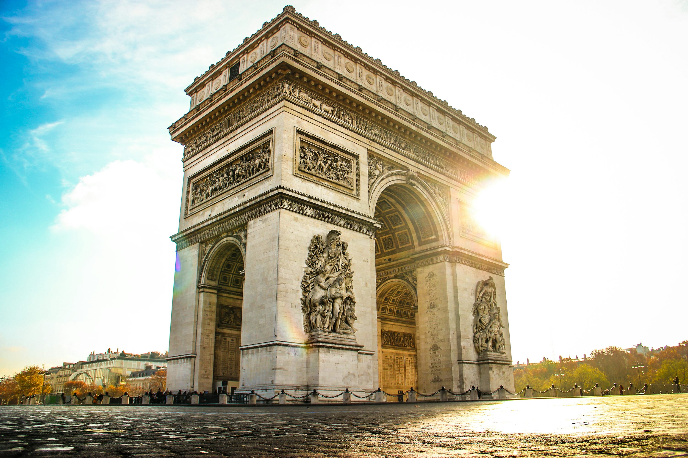
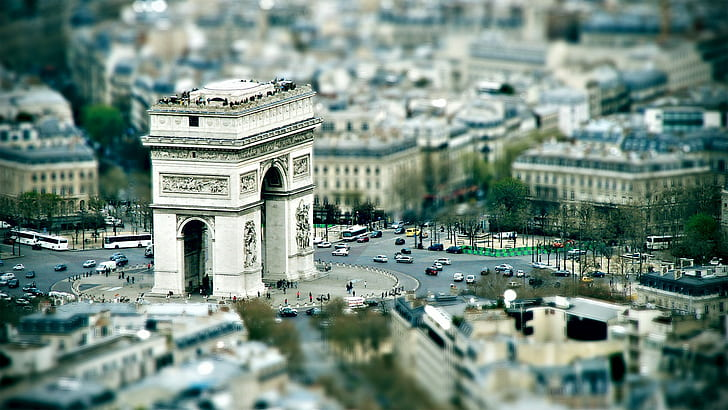
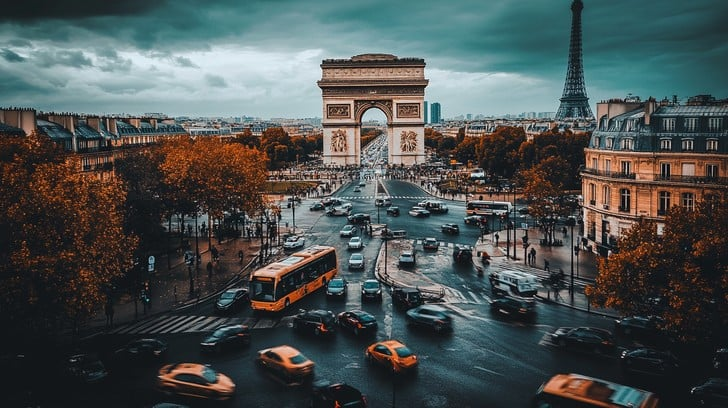
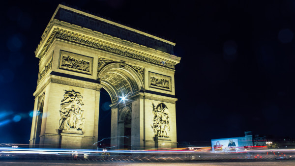
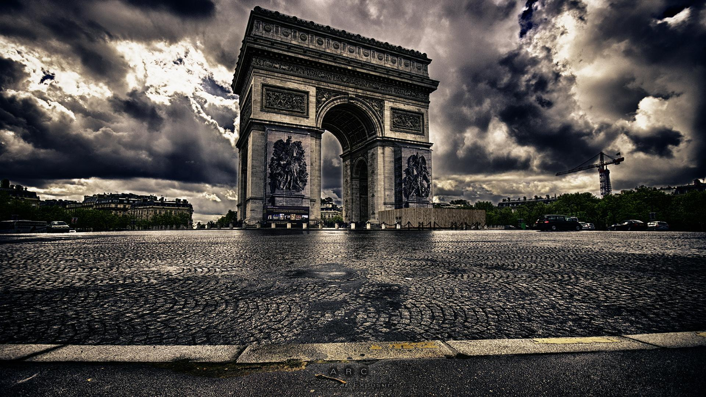
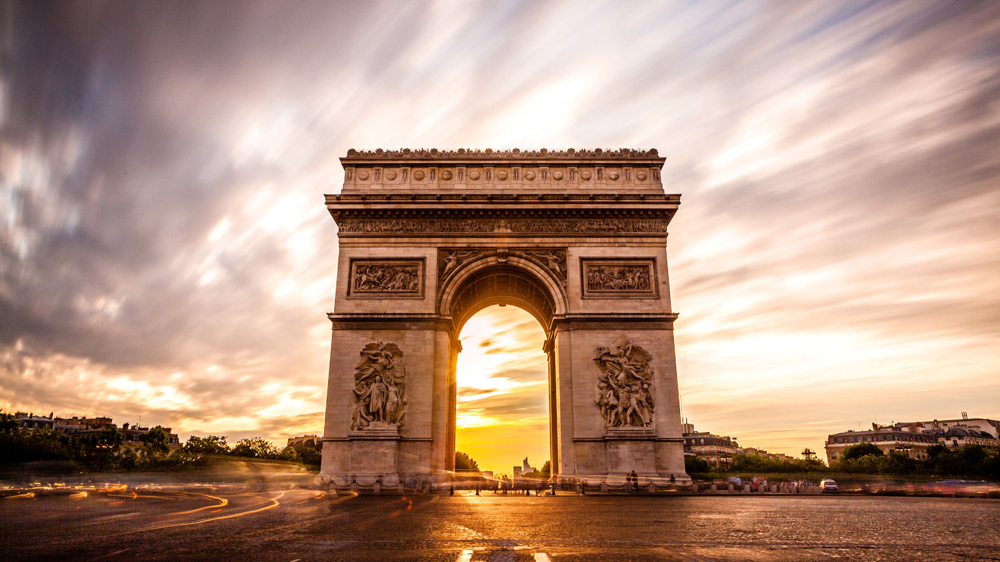
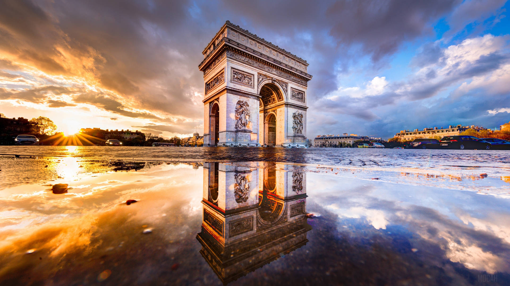
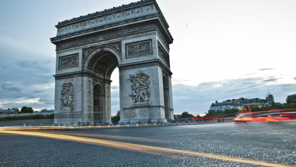
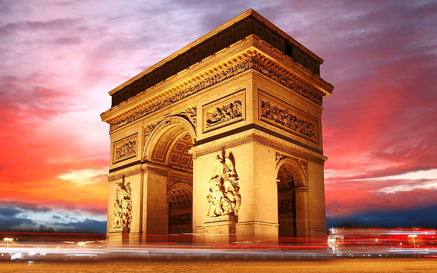
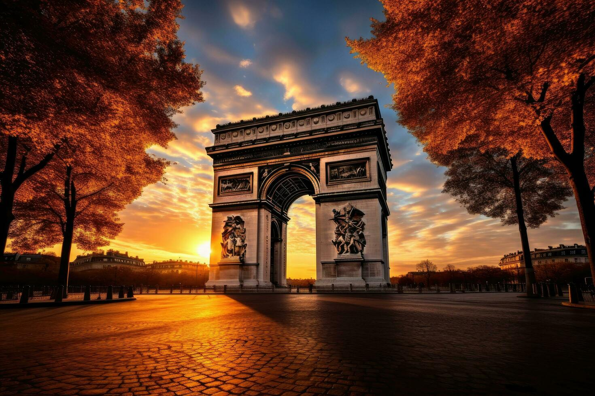
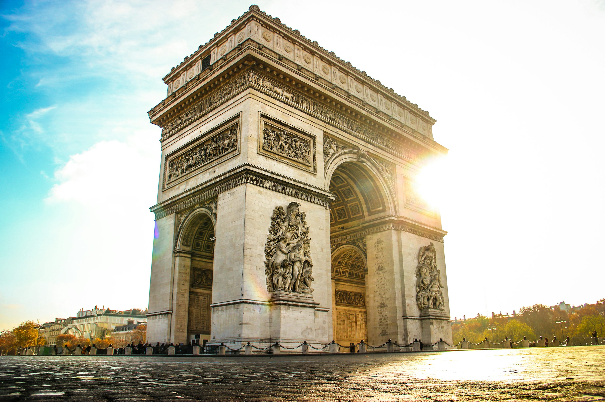
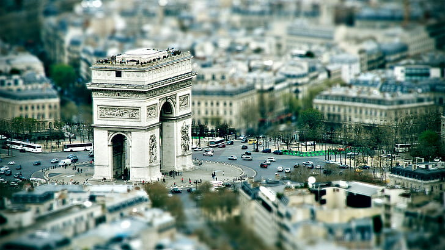
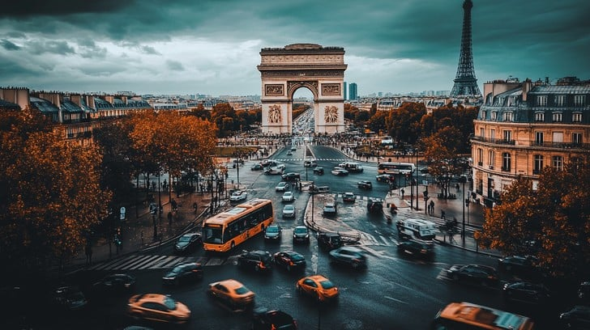
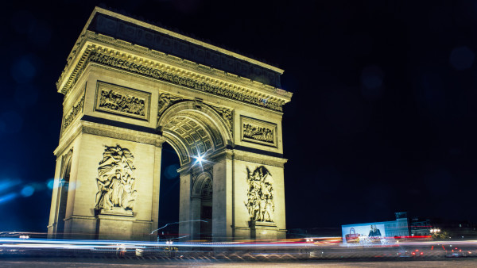
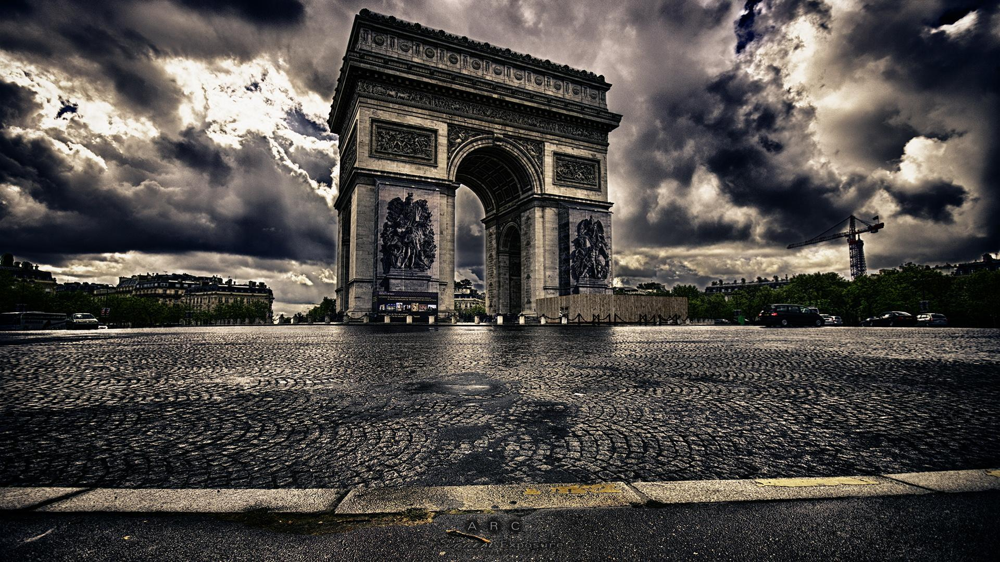